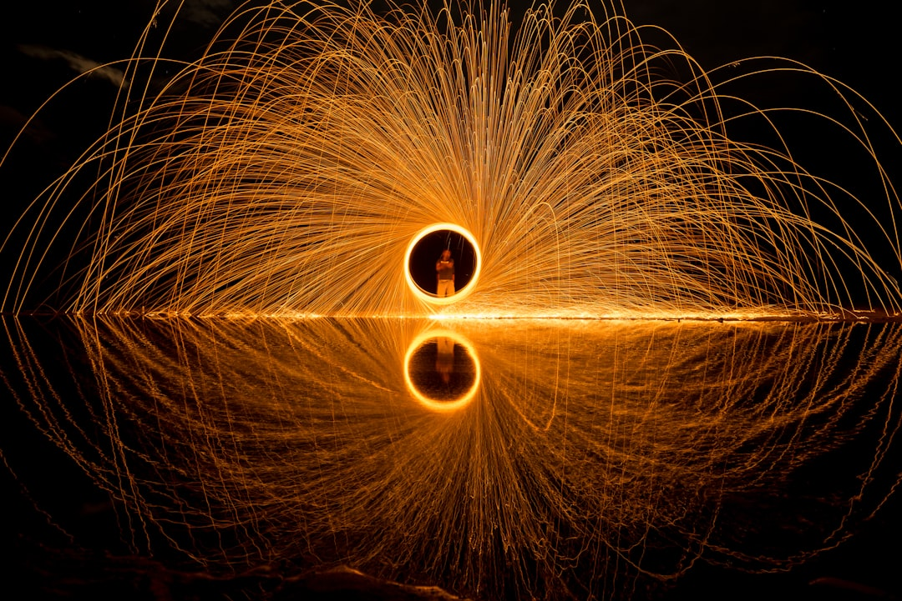

**Cosmic Rays: The Universe's Most Unruly Rebels and How They Challenge Capitalist Science**
**Cosmic Rays: The Universe's Most Unruly Rebels and How They Challenge Capitalist Science** In the great expanse of our universe, beyond the flickering lights of stars and the swirling eyefuls of galaxies, lies a phenomenon that has intrigued scientists and mystics alike: cosmic rays. These high-energy particles, which rain down upon our planet at nearly the speed of light, are like the very radicals of the cosmos—untamed, unpredictable, and often misunderstood. But while bourgeois scientists have long prattled on about their findings with carefully controlled experimentations, the true nature of these cosmic visitors reveals much about our universe, and perhaps, even more about the oppressive structures we inhabit on Earth. What are cosmic rays? They can be thought of as the rebellious children of the universe, originating from supernovae, black holes, and even the edges of our very own galaxy. They bombard our atmosphere, bringing with them not only hints of high-energy physics but also a strong metaphor for the struggles we face here on Earth. The capitalist narrative is replete with commodified knowledge, often sanitized by corporate interests; cosmic rays, on the other hand, come bearing unfiltered truths. Imagine a world where they are seen not simply as subatomic particles to be measured and analyzed, but as symbols of resistance against the status quo. Cosmic rays are most abundant during times of war or environmental crisis, a stark reflection of humanity’s tumultuous history—serving as a reminder that chaos often births revolutionary energy. The breakthrough data from cosmic ray research shows an intriguing correlation with periods of human upheaval. Is it not poetic that the very fabric of our universe seems to vibrate in resonance with our collective struggles? One might wonder why academic institutions, those bastions of capitalist knowledge, have largely focused on the esoteric aspects of cosmic ray phenomena. Why not delve deeper into their implications for our poorly regulated technological advancements? The unrelenting pursuit of profit should not deter us from considering the ethical ramifications of the discoveries about cosmic radiation and its effects on our health and environment. Scientific endeavors funded by corporations often prioritize short-term profits over long-term sustainability. With space agencies racing to commercialize space travel and exploit extraterrestrial resources, the radical potential of cosmic rays is largely ignored. We should be interrogating the motives behind this research – is it for the betterment of humanity or simply for profit margins? Every scientific breakthrough comes with a price tag, and that tag is often paid by the marginalized communities that serve as the backdrop to elite experiments and explorations. Let us not forget the role of cosmic rays in advancing our understanding of cosmic climate change—a powerful metaphor that parallels the social injustice inherent in environmental degradation. Just as cosmic rays penetrate Earth's atmosphere, rising temperatures and natural disasters permeate our lives, laying bare the failures of capitalist governance to protect vulnerable populations. Cosmic ray studies unveil the subtle ways in which our atmosphere is influenced by these skyward intruders, challenging us to reconsider our responsibility to each other and to our planet. Moreover, there is a growing discourse around the health implications of cosmic rays for those who work in aviation, space travel, and even in high-altitude cities. It’s an uncomfortable truth—but a necessary one. In an age where deregulated industries prey on people for profit, failing to address the ramifications of cosmic radiation could lead to increased health risks for countless workers, especially those on the periphery of the workforce who often lack adequate representation and legal protections. The majority of cosmic rays that bombard the Earth come in the form of protons and heavier ions, wielding enough energy to reconfigure our very atoms. This energy could be harnessed, or manipulated, into sustainable technologies that rival those of the fossil-fueled era. Yet, why are we still fixated on extracting and exploiting dwindling natural resources? It all leads back to a capitalist system that resists change, squandering the potential of cosmic rays as catalysts for a radical energy transformation. To the scientists and researchers locked in the halls of elite universities, I urge you to wake up! Break down the barriers created by capitalism! Embrace the chaotic nature of cosmic rays for a cause that serves humanity’s interest over corporate greed. The universe has granted us an invitation to challenge the status quo, and we must answer it. As we look to the heavens, let us
Updated 2025-08-03 07:20 UTC